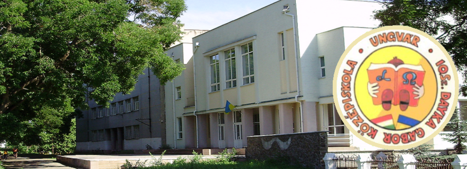

Bemutatkozás

Szidor Patrik vagyok, 16 éves, a BMSZC Neumann János Számítástechnikai Szakgimnázium 9.C osztályos tanulója. Célom, hogy programozóként végezzem el az iskolát. De a videóvágás is nagyon érdekel.
Programozást és Weboldal szerkesztést tanulok.
Pontosabban ezeket a nyelveket:
- C#
- HTML/CSS
Ungvárról Pécelre költöztem, 2018 óta élek Magyarországon és azóta tanulom a programozónyelveket.
Mielőtt elköltöztem, az Ungvári 10. Számú Dayka Gábor Magyar Tannyelvű Középiskolába tanultam 9 évig. Idegen nyelvek közül kötelező volt az ukrán, angol és magyar. E nyelvek mellett az oroszt is elsajátítottam. A matek volt a kedvenc tantárgyam ami nagyon különbözik az itteni matektól.
5 évig úsztam, 3 évig vívtam, de ezekkel felhagytam egészségügyi problámák miatt.
Versenyeken is részt vettem osztályommal. Az egyik egy többszakaszos honismereti verseny volt, ahol többek között egy rövid kisfilmet is kellett készíteni Ungvárról, ITT megtekinthető. Mindent összevetve I. helyezést értünk el, aminek egy Brüsszeli út volt a fődíja.
Megyei rajzversenyt is nyertem, aminek a tematikája a Gyermekek Jogai (Права дитини - prává gyiténé) volt.
Személyes adatok:
- Születési hely: Ungvár, Ukrajna
- Születési dátum: 2002. november 25
- Kedvenc időtöltésem: utazás, úszás, programozás, vidóvágás/készítés
Készítette: Szidor Patrik 9.C